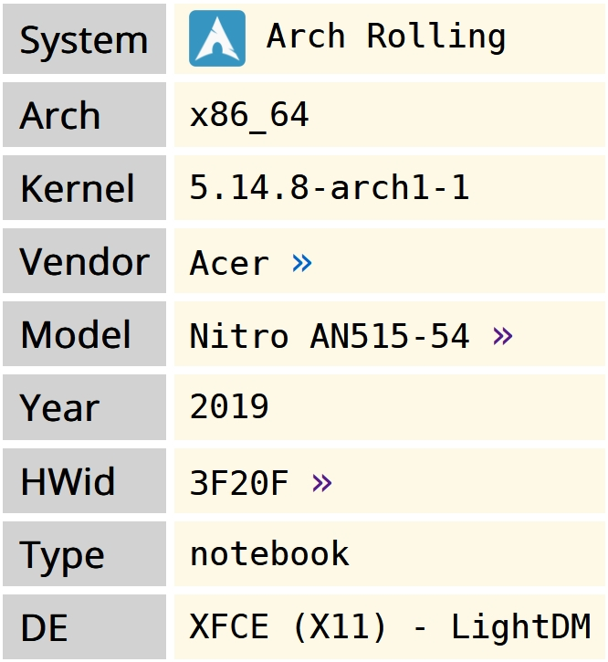

Is this life? Is it real?
© 2024 Naveen | Personal Webpage
Daily Driver Laptop
Host:

INXI log:
System: Kernel: 5.14.8-arch1-1 x86_64 bits: 64 compiler: gcc v: 11.1.0 Desktop: Xfce 4.16.0 tk: Gtk 3.24.29 info: xfce4-panel wm: xfwm 4.16.1 vt: 7 dm: LightDM 1.30.0 Distro: Arch Linux Machine: Type: Laptop System: Acer product: Nitro AN515-54 v: V1.33 Mobo: CFL model: Octavia_CFS v: V1.33 UEFI: Insyde v: 1.33 date: 11/17/2020 Battery: ID-1: BAT1 charge: 28.1 Wh (56.8%) condition: 49.5/57.5 Wh (86.2%) volts: 15.1 min: 15.4 model: LGC AP18E8M type: Li-ion status: Discharging Memory: RAM: total: 7.6 GiB used: 1.67 GiB (22.0%) Array-1: capacity: 32 GiB slots: 2 EC: None max-module-size: 16 GiB note: est. Device-1: ChannelA-DIMM0 size: No Module Installed Device-2: ChannelB-DIMM0 size: 8 GiB speed: spec: 3200 MT/s actual: 2667 MT/s type: DDR4 detail: synchronous bus-width: 64 bits total: 64 bits manufacturer: Micron part-no: 8ATF1G64HZ-3G2J1 CPU: Info: Quad Core model: Intel Core i5-8300H bits: 64 type: MT MCP arch: Kaby Lake note: check rev: A cache: L2: 8 MiB flags: avx avx2 lm nx pae sse sse2 sse3 sse4_1 sse4_2 ssse3 vmx bogomips: 36812 Speed: 800 MHz min/max: 800/4000 MHz volts: 0.8 V ext-clock: 100 MHz Core speeds (MHz): 1: 800 2: 800 3: 800 4: 800 5: 799 6: 799 7: 800 8: 802 Graphics: Device-1: Intel CoffeeLake-H GT2 [UHD Graphics 630] vendor: Acer Incorporated ALI driver: i915 v: kernel bus-ID: 00:02.0 chip-ID: 8086:3e9b class-ID: 0300 Device-2: NVIDIA GP107M [GeForce GTX 1050 3 GB Max-Q] vendor: Acer Incorporated ALI driver: nvidia v: 470.74 bus-ID: 01:00.0 chip-ID: 10de:1c91 class-ID: 0300 Device-3: Quanta HD User Facing type: USB driver: uvcvideo bus-ID: 1-5:3 chip-ID: 0408:a061 class-ID: 0e02 Display: x11 server: X.Org 1.20.13 compositor: xfwm4 v: 4.16.1 driver: loaded: intel,nvidia resolution: 1920x1080~60Hz s-dpi: 96 OpenGL: renderer: Mesa Intel UHD Graphics 630 (CFL GT2) v: 4.6 Mesa 21.2.3 direct render: Yes Audio: Device-1: Intel Cannon Lake PCH cAVS vendor: Acer Incorporated ALI driver: snd_hda_intel v: kernel bus-ID: 00:1f.3 chip-ID: 8086:a348 class-ID: 0403 Device-2: NVIDIA GP107GL High Definition Audio driver: snd_hda_intel v: kernel bus-ID: 01:00.1 chip-ID: 10de:0fb9 class-ID: 0403 Sound Server-1: ALSA v: k5.14.8-arch1-1 running: yes Sound Server-2: sndio v: N/A running: no Sound Server-3: JACK v: 1.9.19 running: no Sound Server-4: PulseAudio v: 15.0 running: no Sound Server-5: PipeWire v: 0.3.38 running: yes Network: Device-1: Realtek RTL8111/8168/8411 PCI Express Gigabit Ethernet vendor: Acer Incorporated ALI driver: r8169 v: kernel port: 3000 bus-ID: 06:00.0 chip-ID: 10ec:8168 class-ID: 0200 IF: enp6s0 state: down Device-2: Intel Wi-Fi 6 AX200 driver: iwlwifi v: kernel port: 3000 bus-ID: 07:00.0 chip-ID: 8086:2723 class-ID: 0280 IF: wlp7s0 state: up IF-ID-1: anbox0 state: down IF-ID-2: virbr0 state: down Bluetooth: Device-1: Intel AX200 Bluetooth type: USB driver: btusb v: 0.8 bus-ID: 1-14:4 chip-ID: 8087:0029 class-ID: e001 Report: rfkill ID: hci0 rfk-id: 3 state: down bt-service: disabled rfk-block: hardware: no software: no address: see --recommends RAID: Hardware-1: Intel 82801 Mobile SATA Controller [RAID mode] driver: ahci v: 3.0 port: 5060 bus-ID: 00:17.0 chip-ID: 8086.282a rev: 10 class-ID: 0104 Drives: Local Storage: total: 1.14 TiB used: 639.77 GiB (54.7%) ID-1: /dev/sda vendor: SanDisk model: SD9SN8W256G1014 size: 238.47 GiB speed: 6.0 Gb/s type: SSD rev: 7000 scheme: GPT ID-2: /dev/sdb vendor: Seagate model: ST1000LM049-2GH172 size: 931.51 GiB speed: 6.0 Gb/s type: HDD rpm: 7200 rev: ACM1 scheme: GPT Partition: ID-1: / size: 129.05 GiB used: 95.86 GiB (74.3%) fs: ext4 dev: /dev/sdb5 ID-2: /home size: 104.74 GiB used: 45.12 GiB (43.1%) fs: ext4 dev: /dev/sdb7 Swap: ID-1: swap-1 type: partition size: 8.3 GiB used: 0 KiB (0.0%) priority: -2 dev: /dev/sdb4 Sensors: System Temperatures: cpu: 41.0 C mobo: N/A Fan Speeds (RPM): N/A Info: Processes: 263 Uptime: 17m wakeups: 1 Init: systemd v: 249 Compilers: gcc: 11.1.0 clang: 12.0.1 Packages: pacman: 1571 Shell: sh (sudo) default: Bash v: 5.1.8 running-in: xfce4-terminal inxi: 3.3.06
HW Probe link